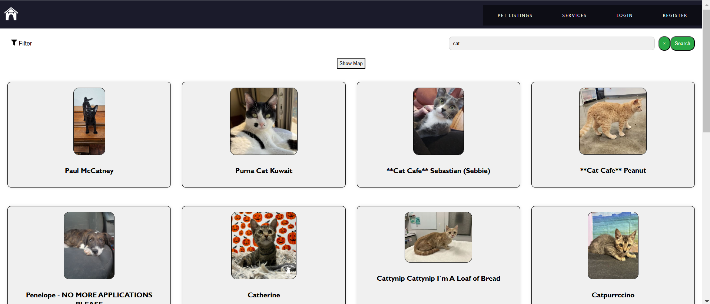
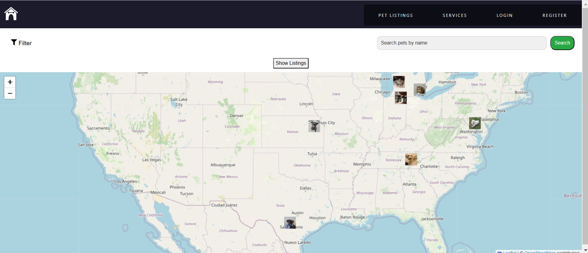
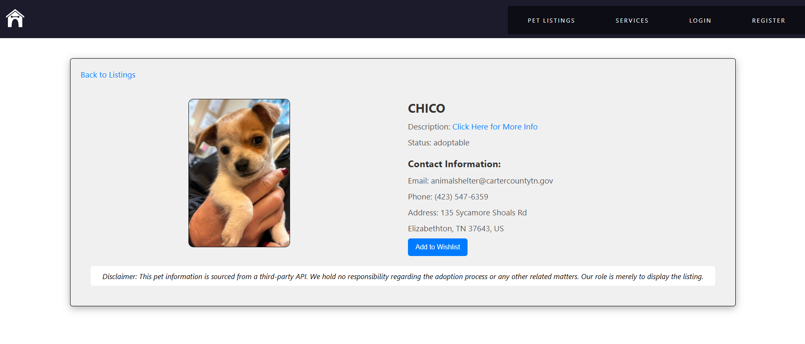

Find-A-Pet - Your One-Stop Pet Adoption & Service Platform
The Find-A-Pet project is a dynamic and user-centered web platform developed with the MERN stack, aimed at facilitating pet adoption and providing comprehensive care resources for pet enthusiasts. By centralizing essential services like adoption listings, pet care resources, and service provider connections, the platform aims to make the journey of adopting and caring for a pet as seamless and supportive as possible. The platform is accessible online at Find-A-Pet.
This project involved the creation of a user-friendly web application utilizing MongoDB, Express.js, React, and Node.js (MERN stack). The platform offers features such as pet listings, adoption resources, and ongoing pet care services to support both adopters and pet owners. Users can browse available pets, view detailed profiles, and find information on adoption procedures, fostering a seamless experience from start to finish. The platform also includes features such as user authentication, service listings for pet grooming and veterinary care, geolocation-based search using an interactive map, a wishlist feature, and appointment management for service bookings. The goal was to bridge the gap between pet enthusiasts and adoption centers, making the process more accessible and efficient.
As the unofficial project leader, I managed sprints, coordinated team efforts, and ensured that development milestones were achieved on time. I played a pivotal role in both frontend and backend development, contributing extensively to the platform's core functionality. On the frontend, I implemented user interfaces using React, focusing on responsive design and an intuitive user experience. I also integrated the pet listings with a third-party API, implemented search and filter functionalities, and added an interactive map to enhance the user experience. On the backend, I worked on setting up RESTful APIs using Express.js, integrating MongoDB for data storage, and ensuring secure user authentication and data handling. Additionally, I implemented booking functionality, allowing users to schedule services, and incorporated a wishlist feature for users to save favorite pets. I facilitated effective communication within the team, balancing project management responsibilities with hands-on coding to help deliver a cohesive and functional platform.
Due to academic integrity restrictions posed by Macquarie University, I could not make the repository public, which contains the codes, sample videos, and other documents of the platform. However, it can be shared with potential recruiters upon request from here.